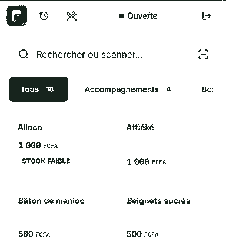
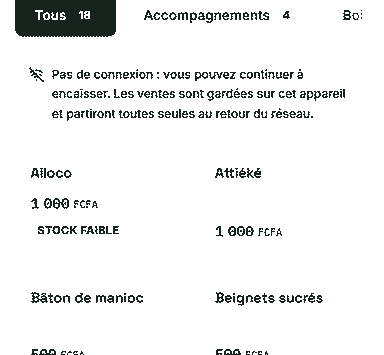
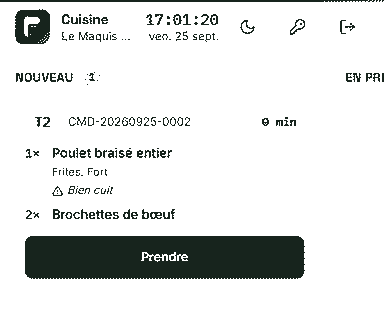

Connexion en boucle sur iPhone
Cause. Le site et l’API vivaient sur deux domaines : Safari refusait le cookie de session.
Règle. L’API reste sur un sous-domaine du site. Vérifié en production sur iPhone.
Je suis Djabir, développeur full-stack à Libreville. J’ai créé Gab-POS Tech, la caisse que des restaurants du Gabon utilisent chaque jour. En voici une version miniature, à essayer tout de suite.
Le Maquis du Rond-Point
Caisse de démonstration
En ligne
Pas de connexion : vous pouvez continuer à encaisser. Les ventes sont gardées sur cet appareil et partiront toutes seules au retour du réseau.
Rien de perdu, rien en double. C’est ce que fait Gab-POS Tech en plein service. Voir le vrai logiciel
DJABIR ABDOUL RAOUF
Développeur full-stack
Fondateur de Gab-POS Tech
Libreville, Gabon
TICKET EN COURS
Aucun article pour l’instant.
Touchez un plat sur la caisse :
il s’imprimera ici.
TOTAL
Ce ticket continue en bas de la page :
mon travail, mes pannes, mon parcours.
Un maquis, une boutique ou un restaurant l’installe sur le téléphone ou l’ordinateur qu’il a déjà. En FCFA, en français, avec Airtel et Moov à la caisse.
GAB-POS TECH
Logiciel de caisse, de stock et d’équipe.
Conçu, codé et mis en ligne par moi.

DANS LE LOGICIEL
AUTOUR DU CODE
React · Vite · Tailwind CSS · Node.js · Express · Prisma · MySQL · Socket.IO · PWA · Vercel · Render · Aiven
Un soir de service, la connexion peut tomber à tout moment. La caisse ne doit pas s’en apercevoir, et le patron ne doit rien perdre.
SANS RÉSEAU

CE QUI SE PASSE
Cette page marche pareil : après une première visite, elle s’ouvre sans réseau.
Filmé sur un vrai téléphone, écran verrouillé, avec le compte de démonstration.
EN DIRECT

Un ticket honnête montre aussi les annulations. Chaque panne a laissé une règle, et souvent un test.
ANNULATIONS
Cause. Le site et l’API vivaient sur deux domaines : Safari refusait le cookie de session.
Règle. L’API reste sur un sous-domaine du site. Vérifié en production sur iPhone.
Cause. Les références de vente étaient numérotées par commerce, mais uniques pour toute la base. Deux commerces, le même jour, la même référence : le second était rejeté.
Règle. Toute unicité se déclare par commerce, et se teste avec deux commerces.
Cause. Avec un VPN allumé, le téléphone se croit connecté. La requête ne rate pas : elle reste suspendue, sans erreur.
Règle. Tout envoi a un délai maximum et une clé unique. On peut toujours le relancer sans danger.
Ce que j’utilise tous les jours, et ce que je connais moins. Comme dans une vraie caisse, le stock faible est signalé.
STOCK
EN RAYON, CHAQUE JOUR
EN RÉSERVE
STOCK FAIBLE
EN COMMANDE
Un bac en technologie de l’informatique, un cycle en génie logiciel, deux stages, puis mon propre produit.
HISTORIQUE
AUTRES PROJETS
Chaque soir, une caisse fait son Z : le total de la journée, sans arrondir. Voici le mien, relevé dans le code et les tests.
Z DE CAISSE
Relevé du 04/11/2026
Je décide, je relis, je teste et je réponds de ce qui part en production. L’IA écrit avec moi, et je le dis.
LONGUEUR DU TICKET3 m
Je réponds en français, depuis Libreville.
CONDITIONS DE VENTE
TOTALÀ SUIVRE
Scannez pour me retrouver
sur LinkedIn.
MERCI DE VOTRE VISITE
Page écrite à la main, sans cookies ni traceurs.
© 2026 Djabir Abdoul Raouf